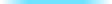
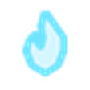

Make your mod's windows wear the glass
KitsuneUI is a theme for 7 Days to Die, and also a small framework. Your windows can use its colours and glass, follow each player's look settings, and join Move HUD. Players without KitsuneUI see your mod exactly as they do today.
The look EAC on
KitsuneUI: XML and images only. Colours, sprites and building blocks.
Move HUD EAC off
KitsuneUI_Settings, a DLL: players drag, resize and hide your HUD pieces.

1. The one rule: wrap it in a conditional
Use KitsuneUI's names only inside a mod_loaded check. A [kuGold] or a ku_panel outside one breaks your window for everyone who doesn't run KitsuneUI.
<configs> <!-- your mod's own patches stay out here, as they are --> <conditional> <if cond="mod_loaded('KitsuneUI')"> <!-- KitsuneUI look here --> </if> </conditional> </configs>
mod_loaded('KitsuneUI_Settings') for ku_move_handle. A player can run the look without the DLL.2. Colours
Use them like the game's own: color="[kuGold]". When a player picks another colour preset (Ember, Moss, Sakura) or a custom hue, your window follows. The swatches show the default Kitsunebi look.
3. Sprites
They're in the game's UI atlas, so sprite="ku_panel" just works. Glass follows each player's glass strength and glass colour.


type="sliced"<headerbg />) and simplebutton are already glass with KitsuneUI, so windows that use them match without any work.4. Building blocks
Templates for the parts most windows need. All of them take pos and depth.
top to change where it starts)alt="true" for alternate rowstglThingText)Example: a glass window
<!-- the glass body behind everything --> <prepend xpath="/windows/window[@name='myWindow']"> <ku_window_body /> </prepend> <!-- the old grey background goes --> <set xpath="/windows/window[@name='myWindow']//sprite[@name='background']/@color">[transparent]</set> <!-- values in gold --> <setattribute xpath="/windows/window[@name='myWindow']//label[@name='value']" name="color">[kuGold]</setattribute>
5. Move HUD
Put a ku_move_handle in your HUD window and it joins Move HUD: players drag it, resize it (60 to 160%), hide it, snap it to the grid, and save it in their layouts. It's kept on screen, saved per player as move.<your window name>, and reset with everything else.
<conditional> <if cond="mod_loaded('KitsuneUI_Settings')"> <append xpath="/windows/window[@name='myHudStrip']"> <ku_move_handle pos="0,0" width="320" height="48" label_key="myHudStripName" /> </append> </if> </conditional>
label for plain text)6. Built with it: KitsuneRadio
KitsuneRadio's tuner and now-playing strip wear the glass when KitsuneUI is on, and the strip joins Move HUD. This is its real XML, shortened. Without KitsuneUI none of it applies and the radio looks as it always has.
<conditional> <if cond="mod_loaded('KitsuneUI')"> <prepend xpath="/windows/window[@name='kitsuneRadioTuner']"> <ku_window_body /> </prepend> <setattribute xpath="/windows/window[@name='kitsuneRadioTuner']//label[@name='kr_now']" name="color">[kuGold]</setattribute> <!-- the station buttons: glass buttons --> <set xpath="/windows/window[@name='kitsuneRadioTuner']//rect[contains(@name, 'Box')]/button/@sprite">ku_round_sm</set> <set xpath="/windows/window[@name='kitsuneRadioTuner']//rect[contains(@name, 'Box')]/button/@defaultcolor">[kuBtn]</set> <set xpath="/windows/window[@name='kitsuneRadioTuner']//rect[contains(@name, 'Box')]/button/@hovercolor">[kuBtnHover]</set> <!-- the now-playing strip: a small glass panel --> <set xpath="/windows/window[@name='kitsuneRadioStrip']/sprite[@depth='1']/@sprite">ku_panel_sm</set> <setattribute xpath="/windows/window[@name='kitsuneRadioStrip']/label[@name='kr_stripStation']" name="color">[kuTextBright]</setattribute> </if> </conditional> <conditional> <if cond="mod_loaded('KitsuneUI_Settings')"> <append xpath="/windows/window[@name='kitsuneRadioStrip']"> <ku_move_handle pos="0,0" width="320" height="58" label_key="krMoveStrip" open_for_moving="true" /> </append> </if> </conditional>
7. Promises
Names stay put
Everything in this guide keeps its name and meaning for all of 1.x. New names may come in minor releases; removing or renaming one would be KitsuneUI 2.0.
Checked every release
A script checks all 52 public names before each release, so nothing slips. Anything not in this guide is internal and can change.
Your licence stays yours
Using these names and templates doesn't make your mod a changed KitsuneUI. NOTICE.md says so in writing. Copying KitsuneUI's own files or art is covered by its licence.
8. Tips
- Test both ways. Load your mod once with KitsuneUI and once without. The second run is the one that catches a name outside the conditional.
setorsetattribute?setonly changes an attribute that's already there. If your label has nocoloryet, usesetattribute.- Grey where you expected glass? Your window's own background sprite is drawn over the glass. Set its colour to
[transparent]. - Faded text inside a glass box? The game multiplies a child's alpha by its parent's, so text inside a see-through sprite fades with it. Keep the container's own sprite opaque.
- Something missing? Open an issue on GitHub with the framework label, or ask on the Nexus page.